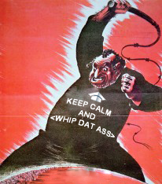

Ланс

История: Ланс отива на гурбет в Либия, изкарвайки си прехраната като звероукротител. Среща Светлин Наков на една от неговите почивки и мигновенно се вдъхновява от хапливия му език и смелата му мечта - софтуерен бардак. Въпреки неопределеността на този проект във времето, Наков поема Ланс под своето крило като личен камшикар в бъдещия Софтуерен Бардак ООД (понастоящем, т.нар. Софтуерен Университет).
Любопитно: Никой не знае истинската самоличност на Ланс - оттук и липсата на истинска снимка. Причината е, че никой няма топките да го погледне в лицето от страх, да не бъде изплющян с камшика оптред.